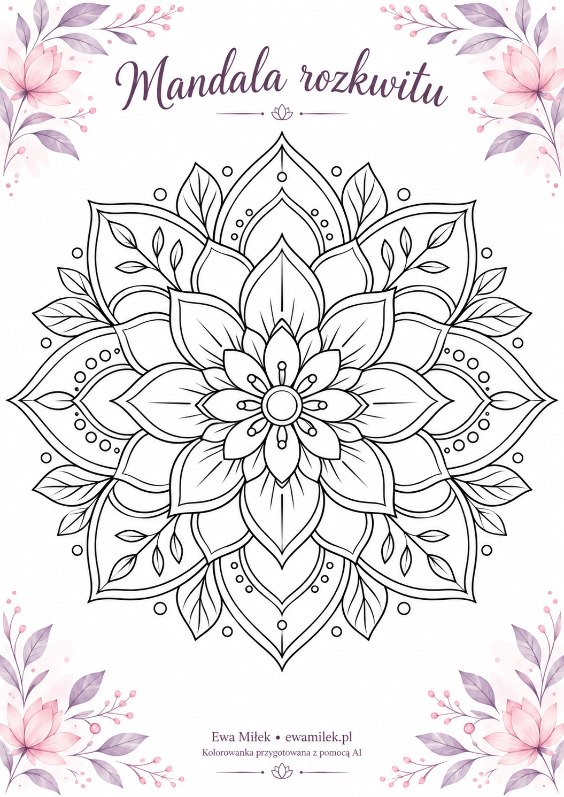
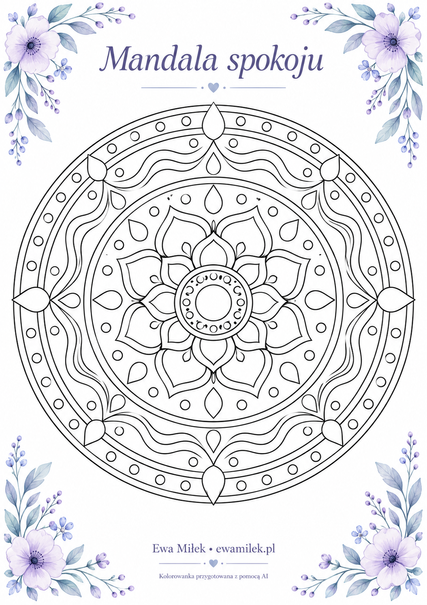
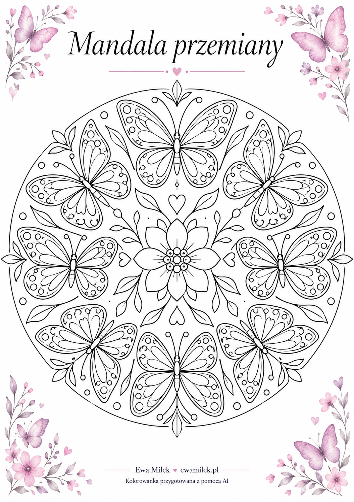
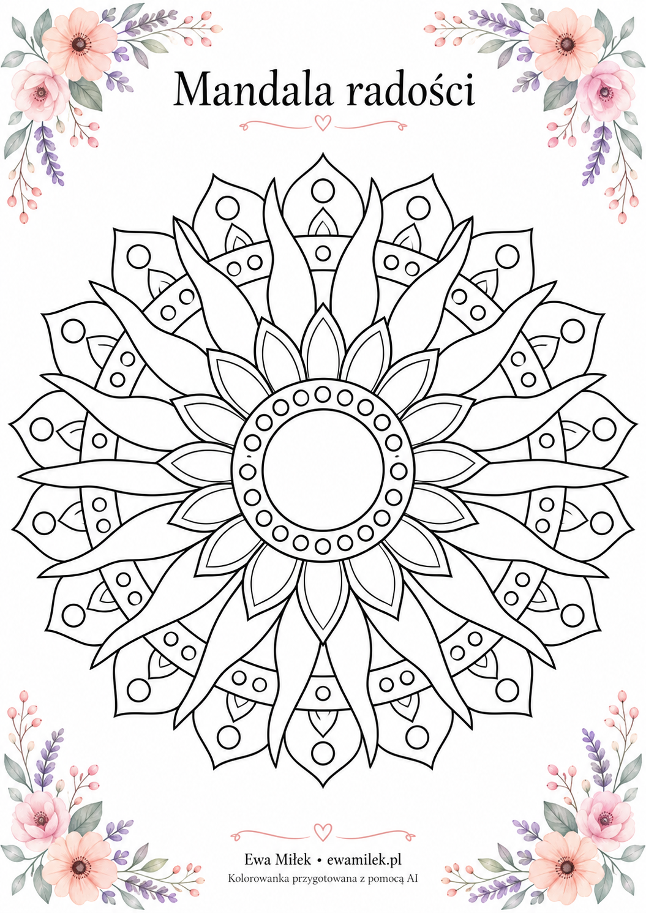
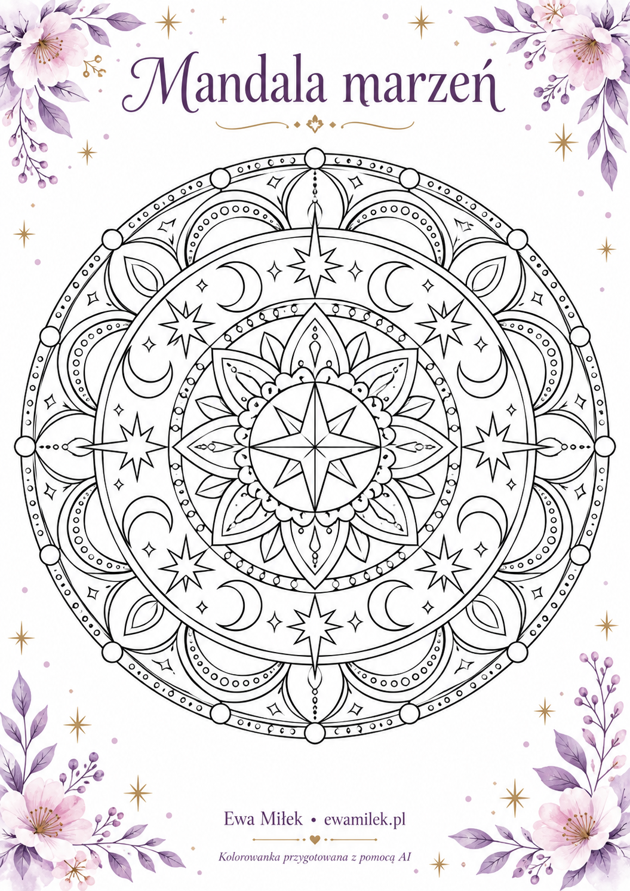

Chwila dla koloru i wyobraźni
Kolorowanki
Wybierz mandalę, przygotuj kredki i nadaj jej własne barwy.
Twoje kolory, Twój rytm
Pięć wzorów przygotowanych z pomocą AI dla strony Ewy Miłek. To nowe kolorowanki, a nie reprodukcje obrazów artystki. Opisy są propozycją twórczej zabawy — możesz wybrać dowolne barwy.
Druk: A4, orientacja pionowa, dopasowanie do strony, wyłączone nagłówki i stopki przeglądarki. Pastelowa oprawa znajduje się w samym obrazku. Użyj papieru odpowiedniego do drukarki; dla kredek wygodny będzie papier 120–160 g/m², jeśli urządzenie go obsługuje. Kredkami akwarelowymi na zwykłym papierze pracuj na sucho.

Mandala rozkwitu
Płatki i liście nawiązują do wzrostu i nowych początków. Zacznij od środka i rozwijaj kompozycję kolejnymi warstwami.
Proponowane kolory
Pudrowy róż, szałwia, lawenda i ciepły żółty.
Jakie kredki?
Miękkie kredki ołówkowe; delikatny nacisk pozwoli nakładać przejrzyste warstwy.

Mandala spokoju
Fale i krople tworzą powtarzalny rytm inspirowany wodą. Wybierz kilka odcieni i powtarzaj je w kolejnych kręgach.
Proponowane kolory
Błękit, turkus, jasny fiolet i srebrzysta szarość.
Jakie kredki?
Kredki ołówkowe z dobrze zatemperowanym końcem do drobnych kropli.

Mandala przemiany
Motyle są motywem zmiany i odkrywania nowych możliwości. Każda para skrzydeł może otrzymać własną paletę.
Proponowane kolory
Fiolet, róż, mięta i delikatny koral.
Jakie kredki?
Kredki ołówkowe do konturów i miękkie kredki woskowe do większych pól.

Mandala radości
Promienista kompozycja przywołuje światło i ciepło. Rozjaśnij środek, a na zewnętrznych płatkach dodaj mocniejsze akcenty.
Proponowane kolory
Żółty, morela, pomarańczowy i odrobina różu.
Jakie kredki?
Miękkie kredki ołówkowe dobrze łączące się podczas cieniowania.

Mandala marzeń
Gwiazdy i księżyce zapraszają do zabawy wyobraźnią. Przeplataj chłodne pola niewielkimi, jasnymi akcentami.
Proponowane kolory
Indygo, lawenda, błękit i złoty żółty.
Jakie kredki?
Precyzyjne kredki ołówkowe; kredka metaliczna może podkreślić pojedyncze gwiazdy.
{kind=link}
{kind=link}
{kind=link}
{kind=link}
{kind=link}